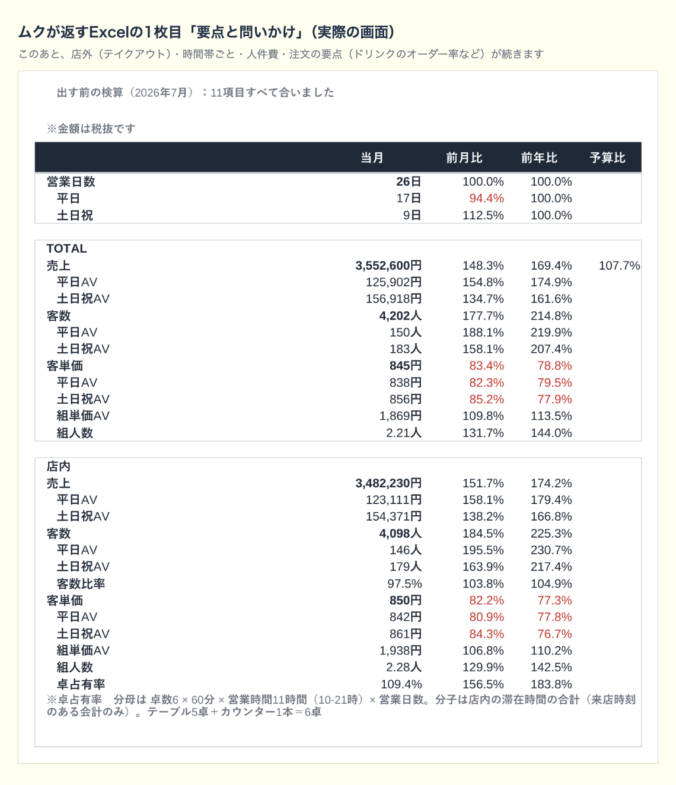

Tools
見本のお店「つばめカフェ」の7月の締めを、ムクと一緒に見ていく動画です（2分37秒）。つばめカフェは見本用に作ったお店で、実在しません。
ムクは、飲食店のレジのジャーナルデータを読んで、数字の検算と分析をし、お店との対話を通して論点を整理する道具です。Claudeに「コネクタ（MCP）」としてつないで使います。
話の終わりに、お店は今月やることを3つまで決めます。翌月は、その答え合わせから始まります。お店と話した記録は、毎月Excelに貯まっていきます。
使えるお店
- 対応しているPOSレジ
- Airレジとでん票くんです。ほかのレジのお店は、買う前にInstagramのDM（@tabex.co）で声をかけてください。
- 要るもの
- ご自身のClaude（Anthropic社のAI）のアカウントです。売上の巻は、無料プランでも、初回の診断から最初にやることを決めるところまで進められます。無料プランには、5時間ごとに使える量の枠があります。
巻の並び
- 売上の巻販売中
- 月が締まったら、POSレジのデータをムクに渡します。ムクは数字が合っているかを確かめてから、売上・客数・客単価を時間帯ごと・平日と土日祝・店内とテイクアウトに分けて、1冊のExcelにまとめます。来月の予算も、ムクと話しながらお店が決めます。
- 原価の巻準備中
- レシピ・原価・仕入を1つにまとめます。毎月の納品書から食材の単価を新しくして、理論原価率を出します。Claude Code で使います。
販売ページ
noteとBrain、どちらで買っても中身は同じです。売上の巻は980円（税込）、買い切りです。noteの販売ページでは、見本のExcelと見本のCSV、つなぎ方の説明書を、買う前に開けます。


お預かりするもの
売上のデータと話した内容は、ご自身のClaudeの中で処理されます。ムササビのサーバーには届きません。
こちらで預かるのは、サインインのときのメールアドレスと、業態・店舗数・席数・都道府県、それと使った日と回数だけです。詳しくはプライバシーポリシーに書いています。
作った人
作ったのは、株式会社mssb（ムササビ）代表の渡部龍哉です。料理人を17年やり、料理長としてお店に、統括料理長として本部に立って、数字も見てきました。
お店に立っている人は、お客さんの様子もスタッフの動きも、毎日見ています。ただ、その体感を数字と突き合わせる時間が少ない。経営の側は数字を見ていても、お店で何が起きているかまでは見えない。その間で話が止まるのを、何度も見てきました。お店の人が自分たちで、毎月の数字と体感を突き合わせられるようにしたくて、ムクを作りました。
作るまでの話は、noteの連載「ムク開発記」の第1話から第4話に書いています。新しい記事はnoteに出して、X（@tabex_mssbworks）でお知らせしています。
ムクを買った方へ
うまくいかないときの窓口と、改修のお知らせの登録はこちらのページです。